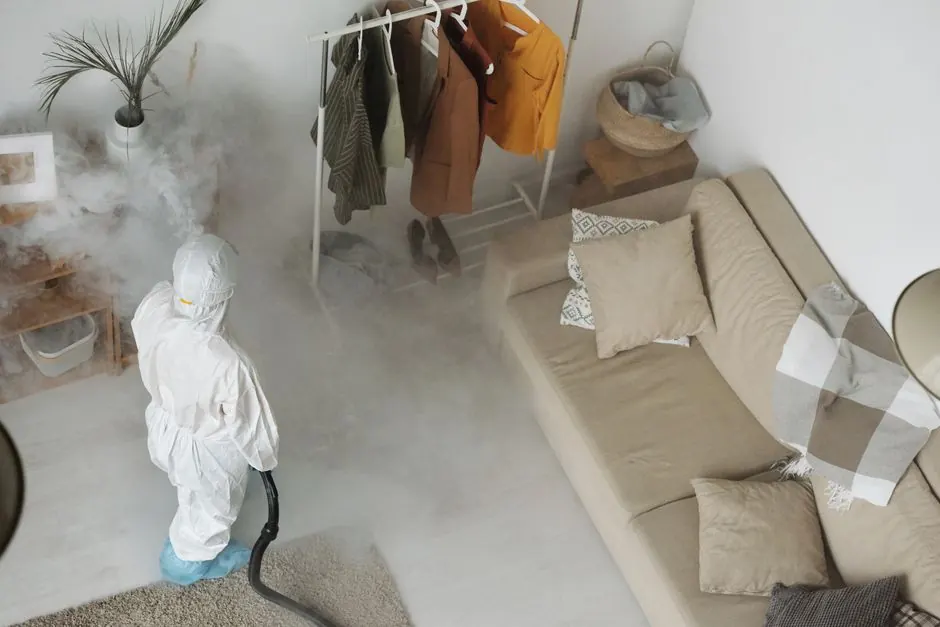
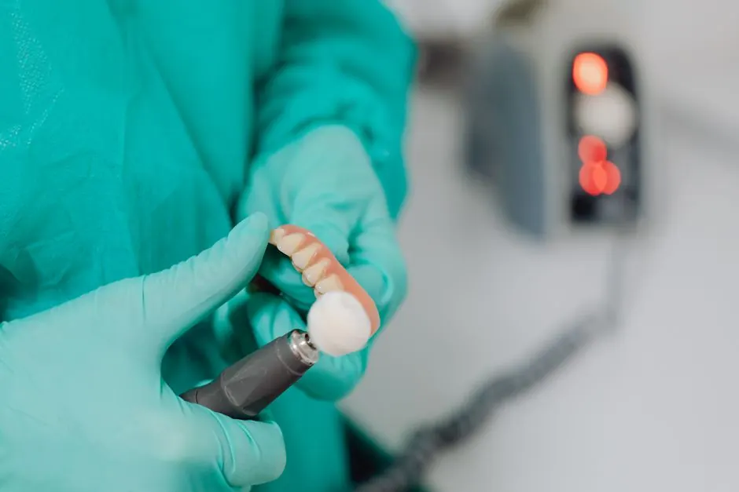

Comprehensive mold assessment in Spokane
Mold Inspection Spokane WA
Mold Inspection Spokane WA is a critical service that identifies and evaluates mold presence in your home. Our mold assessment in Spokane ensures your indoor environment remains safe and healthy.
Live dispatcherUpfront optionsBacked workmanship
What's included
What Our Mold Inspection Includes
Our Mold Inspection Spokane WA service includes a comprehensive evaluation of your property, identifying mold presence and moisture issues. Additional services, such as mold testing, may incur extra costs.
Visual Inspection
A thorough visual inspection of all accessible areas to identify any visible signs of mold and moisture damage.
Moisture Readings
Utilizing moisture meters to assess humidity levels in critical areas prone to mold growth.
Air Quality Testing
Testing the air quality to measure mold spores and identify potential health risks.
Detailed Report
Providing a comprehensive report with findings and recommendations for remediation if necessary.
Service overview
Understanding Mold Inspection Spokane WA
Mold Inspection Spokane WA involves a thorough examination of your property to detect mold growth and assess its severity. This service typically includes visual inspections, moisture readings with tools like moisture meters, and air quality testing to identify hidden mold sources.
Local Spokane customers often require mold inspections due to the region's climate, which can lead to moisture issues and mold growth. Common scenarios include water damage from heavy rains or flooding. Engaging in mold inspection services Spokane ensures early detection and prevention of health risks associated with mold exposure.

How we workWe verify the cause, compare realistic options, and confirm the repair before we leave.
The service timeline
What to Expect During Mold Inspection
The process flexes to the condition, but these checkpoints keep decisions clear.
Initial Consultation
During the initial consultation, our team discusses your concerns and schedules a convenient time for the inspection, typically lasting 1-2 hours.
Visual Inspection
A comprehensive visual inspection is conducted to identify visible mold and moisture issues. This step often uses infrared cameras for hidden mold detection.
Moisture Measurement
Using moisture meters, we measure humidity levels in various areas of your home to pinpoint potential mold growth sources.
Air Quality Testing
Air quality testing is performed to assess mold spores in the air. This is crucial for understanding the extent of mold contamination.
Report and Recommendations
After the inspection, you'll receive a detailed report outlining findings and recommendations for mold remediation if necessary.
Tools & methods
Tools and Methods for Mold Inspection
Purpose-built equipment, used by trained technicians, so the job is done accurately the first time.
Moisture Meter
Used to measure moisture levels in walls and other surfaces to identify potential mold growth.
Infrared Camera
Helps detect hidden moisture and mold behind walls, ceilings, and floors.
HEPA Vacuum
Used to safely remove mold spores from surfaces during the inspection process.
Mold Test Kit
Allows for testing air and surface samples to identify specific types of mold present.
Use cases
When to Consider Mold Inspection
These examples show how the service framework adapts rather than forcing every call through one repair.

Flooded Basement
Following a heavy rain, a basement flooded, leading to concerns about mold. → A detailed inspection revealed hidden mold, which was effectively removed, restoring the space.
Moisture Issues in Kitchen
The homeowner reported peeling paint and moisture stains in the kitchen. → The Mold Inspection identified mold behind cabinets, which was remediated, preventing further damage.
Problems we solve
Common Problems Solved by Mold Inspection
Mold Inspection Spokane WA addresses several critical issues that can affect your home and health.
Hidden mold growth in walls and ceilings
Our thorough inspections identify hidden mold, allowing for timely remediation and prevention of further issues.
Poor indoor air quality due to mold spores
Mold inspections help improve air quality by identifying and addressing mold sources in your home.
Water damage leading to mold growth
We assess moisture levels and recommend necessary actions to prevent mold growth following water damage.
Pricing process
Mold Inspection Pricing in Spokane
$180 - $450 depending on scope
Property Size
Larger properties may require more time and resources for a thorough inspection.
Accessibility
Difficult-to-reach areas can increase labor time and costs.
Extent of Inspection
Comprehensive inspections that include air quality testing may cost more.
Customer reviews
What Our Clients Say
★★★★★
“After experiencing water damage, I called for a Mold Inspection Spokane WA. The team was thorough, and their report helped me address the issue quickly.”
★★★★★
“The Mold Inspection services Spokane provided were exceptional. They identified hidden mold in our rental property, allowing us to remediate before new tenants moved in.”
★★★★★
“I was concerned about mold after a flood. The inspection was quick, and the team explained everything clearly. I felt much better knowing my home was safe.”
How much does a Mold Inspection cost in Spokane?
The typical cost for Mold Inspection Spokane WA ranges from $180 to $450, depending on the property's size and complexity.
What does a Mold Inspection entail in Spokane?
A Mold Inspection in Spokane includes a visual inspection, moisture measurement, and air quality testing to assess mold presence.
How to prepare for a Mold Inspection in Spokane?
To prepare for a Mold Inspection Spokane WA, ensure access to all areas of your home, including attics and basements, and remove any clutter.
When should you call for Mold Inspection services in Spokane?
Call for mold inspection services Spokane if you notice signs of mold, experience unexplained health issues, or have had water damage.
Related services
Related Services
Mold Testing
Mold Testing is crucial following a Mold Inspection to determine the type of mold present and inform remediation strategies.
Mold Remediation
Mold Remediation services follow inspection to eliminate mold and prevent future growth, ensuring a safe living environment.
Water Damage Restoration
Water Damage Restoration is often necessary after a mold inspection if water issues contribute to mold growth, addressing the root cause.Ready when you are
Schedule Your Mold Inspection Spokane WA Today
Contact us today for a thorough mold inspection and ensure your home is safe and healthy. Trust our experienced team to provide reliable services.
Talk with the local team
Request Mold Inspection
We invite you to reach out for any mold-related concerns. Our team is available 24/7 to assist you with your needs.